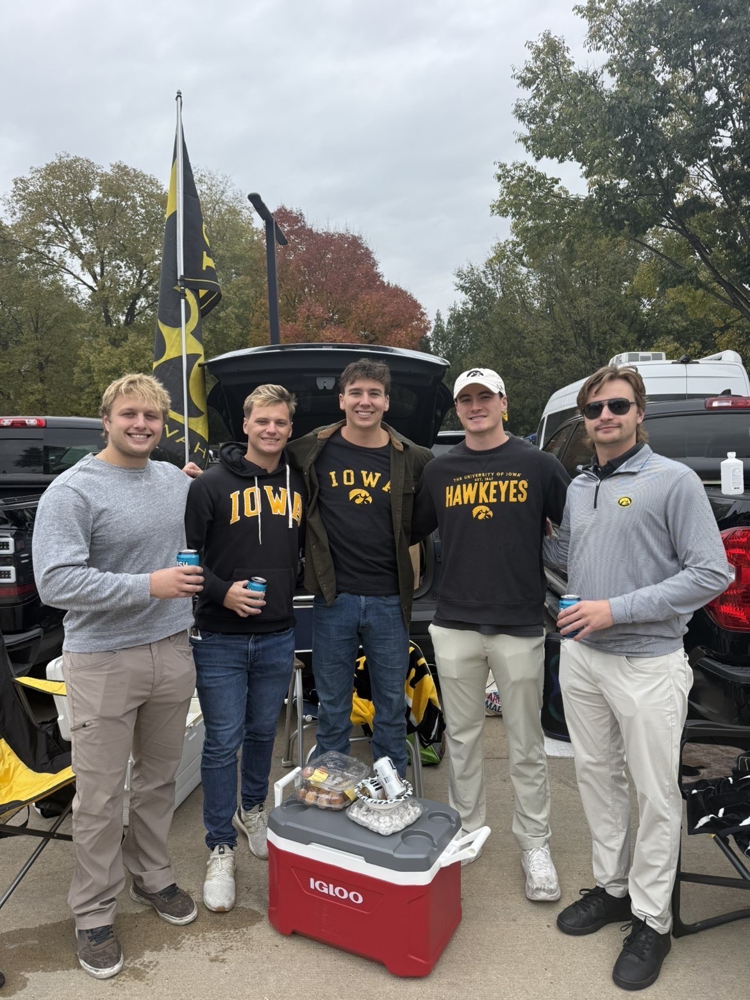

About Chris
My name is Chris Willcutt, and I am currently a senior at the University of Iowa studying Business Analytics and Information Systems. I am interested in using data, technology, and analytics to help organizations make better decisions and solve real-world problems.
Throughout my studies I have worked on projects involving data analysis, dashboards, and business problem solving. I have experience working with tools such as Excel, SQL, Python, and Power BI to analyze data and communicate insights in a clear and useful way.
Outside of academics, I enjoy exercising at the gym and i love to be outside boating and hanging out with family and friends, working on personal projects, and continuing to build my skills in analytics and technology. My goal is to pursue a career in data analytics or information technology where I can continue learning and contribute meaningful insights to organization

My Favorite Sports Teams
- The Chicago Bears
- The Chicago White Sox
- The Hawkeyes Football Team
What i like to do outside of school
Working out
Working out is something I really enjoy because it helps me stay disciplined, focused, and motivated. Strength training is my favorite part, especially bench pressing. I enjoy pushing myself to improve and tracking my progress over time. One of my current goals is to bench press 315 pounds. Right now my personal best is 305 pounds for one rep, a nd I’m working hard to reach that next milestone.
Boating
In the Summer outside of school i like to go boating my family has a boat in chciago which is on lake michiagan we spend almost every weekend on the water and swim and cruise around the city, its very fun to be with the family each weekend and also invite friends to come downtown and see the lakefront on a boat